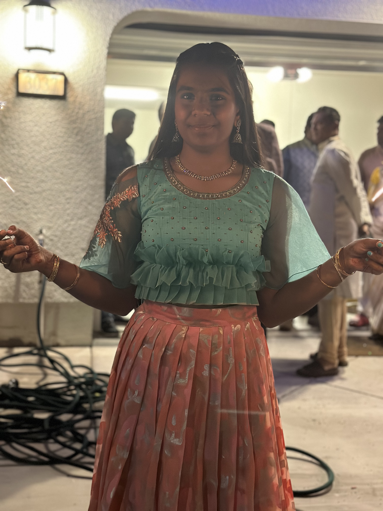

|  |
|
Career Goal:
Embarking on the journey to become an engineer is like
stepping into a realm where imagination meets innovation,
and each problem presents an opportunity for creative solutions.
This is who I want to be, and I have decided that I am able to achieve this goal by
pursuing a strong academic background in mathematics and sciences during high school.
While also considering to take a bachelor's degree in engineering or a related field from an accredited institution,and
joining engineering clubs, competitions, or societies to network with peers and professionals and get a feel of what it is like to work with professionals.
This career is not a career which I wanted to do as a child, but I realized moving into the engineering feild from becoming a doctor.
I always wanted to help people in some way and give back to the world, thats why I wanted to become a doctor. But as time when on I have realized I can help people by just not being a doctor and giving out medications. I can help people creating new ineventions to make their lives easier, allowing people to know that their is always a soluvtion for everything with the help of technology.
Strengths and Personal Qualities:
In my academic and extracurricular journey, I've honed valuable characteristics such as being open - minded, paying attention to detail, and being honest with effective communication.
Through hands-on experiences, I've demonstrated these skills in projects and collaborations, showcasing my ability to thrive in a dynamic engineering environment.
Throughout my life from a young age I have worked on many project with groups and by self in my computer science class, and even doing more diffucult projects during high school including trying to figure out a way to help people during emergencies. During this I have been honest with other and myself about I feel about this project while also
surverying people to ask for their opinions and making sure that I am able to include and everyones thoughts and ideas. With me being able to do this I was able create a wonderful app which helps people during emergencies like fires or earthquakes.
Important Achievements and Abilities:
High school has been a platform for major accomplishments,
including active participation in clubs and teams. While also having good grades and even getting 4.0 GPA while taking hard and complex classes
finding able find ways to help people.
In addition to that, creating a memories and a culture for our new school Emerald High School.
These experiences have taught me resilience, teamwork, and adaptability.
Additionally, my work experiences have provided insights into time management, project coordination, and a deeper understanding of the engineering domain.
In the pursuit of my engineering career,
I bring a diverse set of skills, qualities,
and achievements that set me on a path of continuous growth.
I am grateful for your time in exploring my aspirations, and I
invite you to delve deeper into my journey on this site.
Thank you for being part of my story.